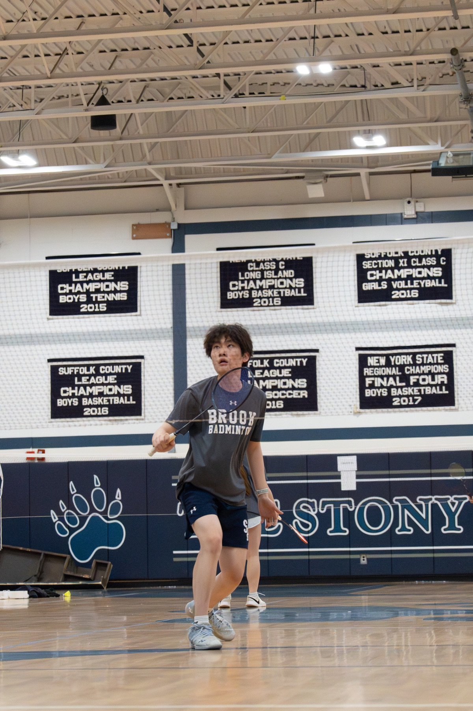
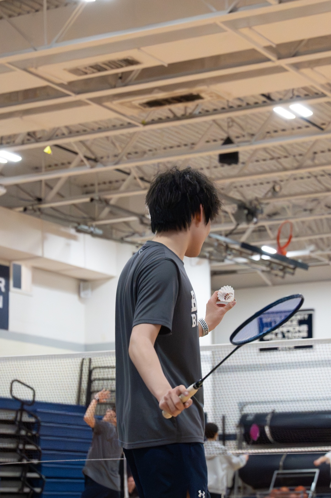

ATHLETICS / BADMINTON
A different kind
of problem solving.
Quick feet. A clear head. One rally at a time.
Badminton is one of the ways I spend time beyond the classroom. On court, each exchange brings a new challenge: reading the shuttle, finding space, and being ready for the next shot.
ON COURT AT THE STONY BROOK SCHOOL
Moments in the game.

Eyes up. Stay ready.
Tracking the shuttle with racket in hand, moving into position for the next return. A rally is a constant conversation between anticipation and reaction.

A moment to focus.
Shuttle in one hand, racket in the other: a brief pause before play begins. The serve sets the exchange in motion, making preparation as much a part of the game as speed.